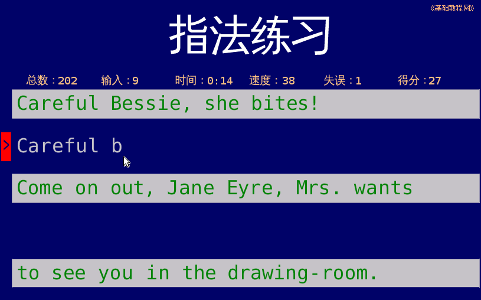
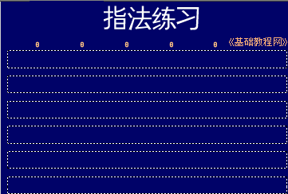
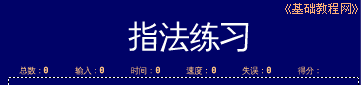
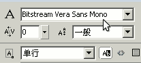
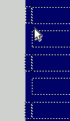

Flash脚本实例《打字》制作教程
作者：TeliuTe 来源：基础教程网
首先我们来学习这个《打字》程序的组成，掌握要用到的各个控件对象，下面我们来看一个练习；
1、程序运行窗口
1）程序运行后，显示三行文本，照着输入后，显示速度、得分、正确率等，输入错误时，会显示红色提醒；

2）程序窗口的大小，考虑不同显示器，设为800×600，背景色设为深兰色，总共六行文本框；

3）主要组成部分是文本框，标题和统计名称，使用静态文本，而显示和输入的文本框，用动态文本和输入文本；

4）考虑到小数点，统计文本框的宽度，要能容纳4个字符；
5）在字体选择上，选择等宽字符，每行加载的字符数可以固定，也比较容易对齐；

6）在每行输入文本框的左侧，放一个错误指示文本框，设为红色背景，平时隐藏起来；

练习：请说出下面这个程序窗口，是由哪些控件组成的？里面的文本框，哪些地方是静态的，哪些地方是动态的？
本节学习了《打字》程序界面的组成，如果你成功地完成了练习，请继续学习下一课内容；
本教程由86团学校TeliuTe制作|著作权所有
基础教程网：http://teliute.org/
美丽的校园……
转载和引用本站内容，请保留版权信息和本站链接。